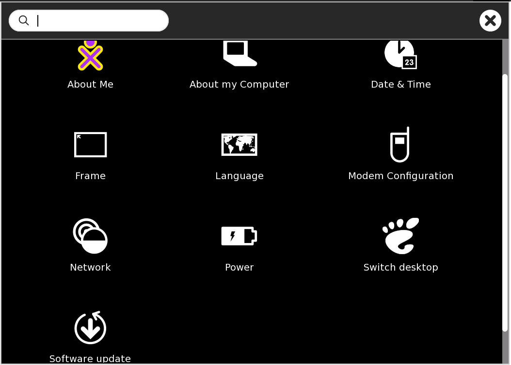

The My Settings page in Sugar is similar to a Control Panel or System Settings window in other operating systems. It provides a way to set various values needed by system functions, such as the language for menus and messages, the keyboard layout for typing and otherwise controlling the system, date and time values and format, and much more.
To access My Settings, go to the Home view and activate the menu on the central XO icon, either by hovering with the cursor, or by right-clicking (O button on an XO). Then select My Settings. The following view appears.
My Settings page
Click any icon to open the indicated control. If you make changes, the window will offer you the choice whether to save (check mark) or discard (x) those changes. It may be necessary to reboot the computer or restart the Sugar session in order for the changes to take effect.
View and change your XO colors and name.
View technical information about your computer: serial number, software versions (Sugar, firmware, wireless), copyright, and license. [edit] Date & Time
Set timezone for date and time display.
View and set activation rules for the frame. Set the dial as to whether you would like the frame to show up instantaneously (right away), never or somewhere in between when you move your cursor to both the corner and edge of your screen.
View and set user interface language. The language you are currently using will show on line 1. If you click on the arrow at the end of the line, you can select another language. Select from the menu by country and language, or click the + icon by the last line to add another line. If there are two or more lines, a - icon will appear by the last line to allow you to delete it.
Enter settings for a mobile broadband connection to a cellular (3G) network. Not required for WiFi.
View and change settings for turning off wireless in order to save battery power, and view or set the jabber server name for collaboration.
Options for automatic power management, which extends the battery life, and for extreme power management. Note: this will stop the wireless function (the Internet) from working.
Switch from Sugar to GNOME desktop. GNOME is one of the most popular desktop managers for Linux. Switching to GNOME enables you to use any Fedora Linux software packages that your computer’s storage and memory capacity will accommodate, other than Sugar. From GNOME, you can return to Sugar by clicking the Switch to Sugar icon on the desktop, or by selecting this command from the GNOME Applications menu.
If you are able, check over the Internet for software updates, and install any that are available.